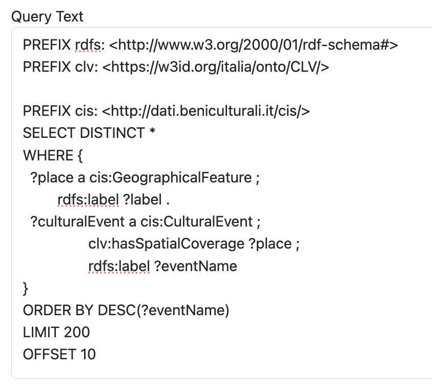
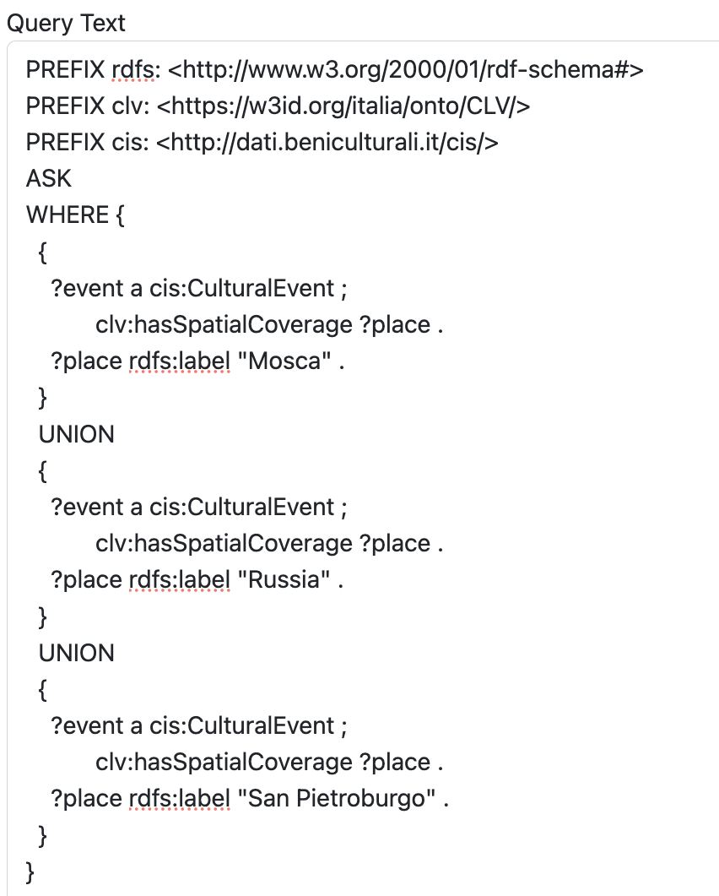
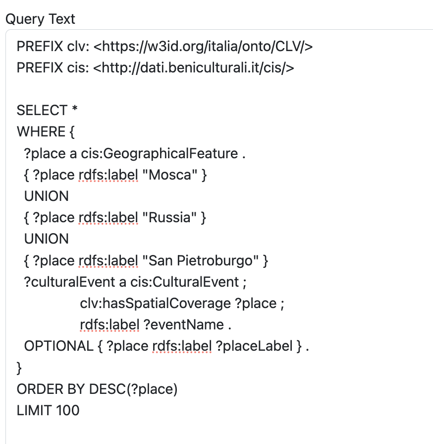

REPORT
Methodology
Project Overview
Our project, "Exploring Cultural Bonds: Russia and Italy," is an in-depth study aimed at uncovering and analyzing the rich cultural connections between these two nations. Utilizing the ArCo knowledge base and large language models, we set out to identify, understand, and document the historical, cultural, and social ties that bind Russia and Italy.
Objectives
- 1) Identify Cultural Connections: Discover and document significant cultural events that highlight the interactions and influences between Russia and Italy.
- 2) Leverage Modern Technologies: Use advanced technologies such as the AInitial Explorationlanguage models to enhance our research capabilities and provide richer insights.
- 3) Create New Knowledge Triples: Expand the existing knowledge base by creating new data connections and enriching the ArCo knowledge graph with additional contextual information.
- 1) Initial Exploration: We began by exploring the ArCo knowledge graph to identify relevant topics and concepts.
- 2) Query Formulation: Based on our initial exploration, we formulated SPARQL queries to extract specific data related to cultural properties that connect Russia and Italy.
- 3) Data Analysis: We analyzed the extracted data to identify relationships, and key themes. This included verifying the accuracy and relevance of the data.
- 4) LLM Integration: We integrated and compared two Large Language Models (LLMs) such as ChatGPT and Mistral to retrieve additional information and provide context, further enriching the knowledge graph.
Approach
To achieve these objectives, we adopted a structured approach:
Initial Exploration
We began by exploring the ArCo knowledge graph to identify relevant topics and concepts. This involved a detailed examination of the ontology modules.
Query Example 1
|  | Question: What cultural events are associated with specific geographical features? Purpose:This query aims to retrieve cultural events linked to various geographical features, ordered by event name. This helps us understand the distribution and variety of cultural events within the ArCo knowledge graph. Result |
Query Formulation
Based on our initial exploration, we formulated SPARQL queries to extract specific data related to cultural properties that connect Russia and Italy.
Query Example 2
|  | Question: Are there any cultural events linked to Moscow, Russia, or Saint Petersburg? Purpose:This ASK query checks if there are cultural events associated with these specific locations. It helps us determine the presence of relevant data before proceeding with more detailed queries. Result |
Query Example 3
|  | Question: What are the specific cultural events linked to Moscow, Russia, or Saint Petersburg? Purpose:This query retrieves detailed information about cultural events connected to these locations, providing insights into the specific events and their geographical context. This data is crucial for understanding the cultural interactions between Russia and Italy. Result |
Next Steps
After identifying relevant cultural events, each team member selected a specific event for further study. These events will be explored in detail, with individual reports provided by each member: